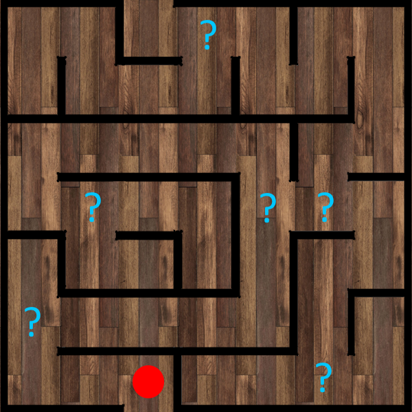

Teidät on kutsuttu Korvatunturille. Pukki on kadonnut ja joulu on vaarassa peruutua!
Saavutte kirjeessä mainittuun osoitteeseen pukin pajalle lumimyrskyn keskellä. Edessänne on suuri ovi.
Ovi on tiukasti lukossa. Oven yläpuolella on vanha, lumen peittämä kyltti, jossa lukee:
JOULUPUKIN PAJA Tähtikuja 1627
Ensimmäinen + Seuraava... ...Viimeinen + Ensimmäinen
Napauta numeroita sormella (tai hiirellä), niin ne pyörivät eteenpäin.
OSA 2: Porojen Karsina
Ovi aukeaa! Huoneessa porot juoksevat villeinä. Sinun täytyy rauhoittaa ne asettamalla ne oikeaan vetojärjestykseen valjaiden värien mukaan.
Porojen Valjaat:
🟠 Oranssi (Tilkku)
🟢 Vihreä (Pyry)
🔴 Punainen (Petteri)
🔵 Sininen (Kipinä)
🟡 Keltainen (Sipsu)
🟣 Violetti (Ailu)
🌈
Vedä ja pudota porojen nimet oikeisiin kohtiin
1.
2.
3.
4.
5.
6.
Tilkku
Pyry
Petteri
Kipinä
Sipsu
Ailu
OSA 3: Salaluukku
Porot rauhoittuvat ja huomaatte niiden heinien alla lattialuukun. Luukussa on matemaattisia symboleja.
🎄 x 🎁 + ⭐ = 19
⛄ + ⭐ = 13
🎄 x ⛄ = 16
🎁 - 🎄 = 5
🎄🎁⭐⛄
OSA 4: Kellari
Saatte luukun auki ja huomaatte rappuset kellariin. Saavuttuanne kellariin näette seinällä kartan sokkeloista ja tajuatte sen olevan kellarin pohjapiirrustus. Kellari on aika pimeä ja sokkeloinen ja teidän täytyy käyttää kartaltalöytyviä symboleja avuksenne suunnistuksessa.

🔴 = Olet tässä.
Käänny "?" kohdalla päästäksesi kellarin perällä olevaan huoneeseen
OSA 5: Pukin Työhuone
Selviydyitte sokkelosta! Olette nyt upeassa työhuoneessa, jossa on suuri mahonkipöytä. Pöydällä on salkku.
Salkun lukossa on neljä numeroa. Muistelette, mikä päivämäärä on pukeille kaikista tärkein...
" **** "
OSA 6: Salkun Salalokero
Salkku aukeaa! Sisällä on pienempi, monimutkainen lukko, jossa on Pukin salainen aakkosjärjestys. Löysitte lisäksi lapun salkusta, jossa on vihje koodiin.
Yksinäinen tonttu näki kolme poroa.
Sitten hän tapasi kuusi muuta tonttua.
Matkalla he löysivät seitsemän suklaapalaa.
He jakoivat ne kuudelle tontulle.
A = 0
OSA 7: Salainen Viesti
Salalokero aukeaa! Sisältä löytyy Pukin kirjoittama lappu, mutta viesti on kirjoitettu salakielellä.
N Z J P Z O Z Q J Z
E -> I, U -> Y, Ä -> C...
Missä Pukki on?
🎅 JOULU ON PELASTETTU! 🎁
Löysitte Pukin Rantasaunalta!
Pukki oli unohtunut löylyihin ja menettänyt ajantajun. Kiitos teidän, lahjat saadaan jaettua ajoissa!